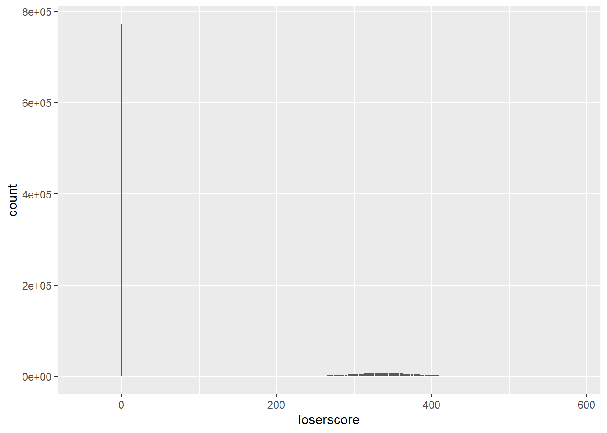

Visualization
The graphic I chose to replicate for this exercise is a distribution of winning and losing scores from more than 700,000 Scrabble games: https://fivethirtyeight.com/features/how-qi-and-za-changed-scrabble/
.png)
There are very small details Which I tried to capture in my replica. If you look closely, you should be able to see the grid line behind the red and green bars. Additionally, the y-axis and x-axis have custom labels, which describe the variables through one value, like 10.0k scores or 0 points. While the frame around the plot is gone, the plot has a dark x-axis and y-axis.
pacman::p_load(pacman,tidyverse,ggtext)# added ggtext later on to use the richtext() function
scr <- read_csv("~/data/GitHub/scrabble/scrabble-games/scrabble_games.csv")## Rows: 1542642 Columns: 19## -- Column specification --------------------------------------------------------
## Delimiter: ","
## chr (2): winnername, losername
## dbl (14): gameid, tourneyid, winnerid, winnerscore, winneroldrating, winner...
## lgl (2): tie, lexicon
## date (1): date##
## i Use `spec()` to retrieve the full column specification for this data.
## i Specify the column types or set `show_col_types = FALSE` to quiet this message.scr <- as.data.frame(scr)
head(scr)## gameid tourneyid tie winnerid winnername winnerscore
## 1 1 1 FALSE 268 Harriette Lakernick 0
## 2 2 1 FALSE 268 Harriette Lakernick 0
## 3 3 1 FALSE 268 Harriette Lakernick 0
## 4 4 1 FALSE 268 Harriette Lakernick 0
## 5 5 1 FALSE 268 Harriette Lakernick 0
## 6 6 1 FALSE 268 Harriette Lakernick 0
## winneroldrating winnernewrating winnerpos loserid losername loserscore
## 1 1568 1684 1 429 Patricia Barrett 0
## 2 1568 1684 1 435 Chris Cree 0
## 3 1568 1684 1 441 Caesar Jaramillo 0
## 4 1568 1684 1 456 Mike Chitwood 0
## 5 1568 1684 1 1334 Nancy Scott 0
## 6 1568 1684 1 454 Mary Rhoades 0
## loseroldrating losernewrating loserpos round division date lexicon
## 1 1915 1872 3 1 1 1998-12-06 FALSE
## 2 1840 1798 6 2 1 1998-12-06 FALSE
## 3 1622 1606 10 3 1 1998-12-06 FALSE
## 4 1612 1600 9 4 1 1998-12-06 FALSE
## 5 1537 1590 4 6 1 1998-12-06 FALSE
## 6 1676 1647 8 8 1 1998-12-06 FALSEFirst, I started by making test plots with my two main variables - winnerscore and loserscore. My initial idea to this approach was to create these two and see if there was a way to layer them on top of each other.
winnerscore
w_test_plot <- scr %>% ggplot(aes(x=winnerscore))+
geom_bar()
w_test_plotloserscore
l_test_plot <- scr %>% ggplot(aes(x=loserscore))+
geom_bar()
l_test_plot
When I plotted these two figures, I noticed how they seemed to be zoomed far out. Looking back in the data, there are several games that seem to have started and ended with no results - as in, the final score was 0 - 0. I proceeded by filtering these scores out.
scr <- scr %>% filter(winnerscore != 0 & loserscore != 0)View these plots again:
winnerscore
w_test_plot <- scr %>% ggplot(aes(x=winnerscore))+
geom_bar()
w_test_plotloserscore
l_test_plot <- scr %>% ggplot(aes(x=loserscore))+
geom_bar()
l_test_plotBy eliminating those scores, I ended up with a two graphs that look a lot nicer. At this stage, I also figured out that it would be easier use pivot_longer in my dataset to create one variable “score” and a variable with “winnerscore” and “loserscore” as values. This follows tidy data format and will allow me to set my x value equal to score and color equal to “status” (winnerscore/loserscore). At this stage, knowing I only need the variables for score, I selected gameid, winnerscore, and loserscore to simplify the dataset for my plot.
# 700,000 games of scrabble graph
score <- scr %>% select(gameid,winnerscore,loserscore)
score$gameid <- as.character(score$gameid)
head(score)## gameid winnerscore loserscore
## 1 3131 521 237
## 2 3132 488 262
## 3 3133 465 330
## 4 3134 467 304
## 5 3135 404 292
## 6 3136 491 364#score <- score %>% gather(key = "score", value = "n",2,3)
# I was going to use the gather function from tidyr, but recently learned that it's no longer supported and has been replaced by pivot_longer.
score <- score %>% pivot_longer(c(winnerscore,loserscore),
names_to = "status",
values_to = "score")One more issue I noticed after starting my final plot was a number of negative scores, which I didn’t think was possible in scrabble. I’m filtering those out to make my plot more similar to the one on fivethirtyeight.
score <- score %>% filter(score > 0)I tried just about every way to add custom fonts to my plot, but had no success. Allegedly, parts of the extrafont package are no longer supported, making it difficult to work with.
#p_load(showtext)
#font_add_google("Open Sans")
#font_add_google("Courier Prime")First draft of my plot with some text
plot <- score %>% ggplot(aes(x=score, color = status))+
geom_bar()+
labs(title=("700,000 games of Scrabble"),
subtitle = ("All tournament Scrabble scores on cross-tables.com"),
x="Score",
y="",
caption="SOURCE: CROSS-TABLES.COM")
plotFrom this first draft, I immediately wanted to get rid of my color key, re-scale my y-axis values to be in line with fivethirtyeight’s format (for example, 2.5 instead of 2500), and start adding some elements of their style, like fixing the color scheme of the grid. To accomplish this, I pulled the original plot into Adobe Illustrator and used the eyedropper tool to find the precise hex color values they used.
It took some googling, but the best way I found to rescale the y-axis was the sprintf function. By dividing my values by 1000 and using sprintf to format my number, I was able to add the single decimal.
plot1 <- score %>% ggplot(aes(x=score, color = status))+
geom_bar()+
labs(title=("700,000 games of Scrabble"),
subtitle = ("All tournament Scrabble scores on cross-tables.com"),
x="Score",
y="",
caption="SOURCE: CROSS-TABLES.COM")+
scale_y_continuous(label = function(x) {return(sprintf((x/1000), fmt = '%#.1f'))})+
theme(panel.background = element_rect(fill= NA),
plot.background = element_rect(fill="#F0F0F0"),
legend.position = "none",
panel.grid.major = element_line("#c9c9c9"),
panel.grid.minor = element_blank(),
axis.text.y = element_text(color = "#999999"),
axis.text.x = element_text(color = "#999999"),
axis.title.x = element_text(face = "bold"),
plot.title = element_text(face = "bold"),
plot.caption = element_text(size = 6,color = "#a1a1a1"))+
scale_color_manual(values = (c("#ff4538","#50ba52")))
plot1Next, the plot needs solid black lines on both axes. I added those with geom_vline and geom_hline. I also started adding the “Winning Score” and “Losing Score” text at this point. It took several tries to get the position just right.
plot2 <- score %>% ggplot(aes(x=score, color = status))+
geom_bar()+
labs(title=("700,000 games of Scrabble"),
subtitle = ("All tournament Scrabble scores on cross-tables.com"),
x="Score",
y="",
caption="SOURCE: CROSS-TABLES.COM")+
scale_y_continuous(label = function(x) {return(sprintf((x/1000), fmt = '%#.1f'))})+
theme(panel.background = element_rect(fill= NA),
plot.background = element_rect(fill="#F0F0F0"),
legend.position = "none",
panel.grid.major = element_line("#c9c9c9"),
panel.grid.minor = element_blank(),
axis.text.y = element_text(color = "#999999"),
axis.text.x = element_text(color = "#999999"),
axis.title.x = element_text(face = "bold"),
plot.title = element_text(face = "bold"),
plot.caption = element_text(size = 6,color = "#a1a1a1"))+
scale_color_manual(values = alpha(c("#ff4538","#50ba52"),.3))+
geom_vline(xintercept = 0, color="#000000")+
geom_hline(yintercept = 0, color="#000000")+
geom_text(aes(x = 407, y=1500,
label = "Winning\nscores"),
stat = "unique", size = 4, fontface = "bold",
color = "#FFFFFF") +
geom_text(aes(x = 371, y=7200,
label = "Losing\nscores"),
stat = "unique",size = 4, fontface = "bold",
color = "#FFFFFF")+
geom_richtext(aes(x=-100,y=10000, label = "k scores"),
stat = "unique", fill = "#F0F0F0",
color = "#999999", label.color = NA,
size = 4)
plot2At this stage, I worked to get my bars transparent so the grid is visible behind them. This is when I learned that geom_bar() keeps the grey shape of the plot behind the custom colors. I resolved this by using geom_bar(alpha=0) to make the bars completely transparent, then using an alpha value in my scale_color_manual function.
Given that I couldn’t figure out how to shorten the grid lines that extend past 0 on the y-axis, I decided to try cheating by getting rid of my y-axis values and adding custom labels in their place. This probably isn’t the most efficient way to style a plot. No to mention, I still have the end of the grid lines sticking out past my values. Otherwise, I’m very happy with how close I was able to get this to the original!
plot3 <- score %>% ggplot(aes(x=score, color = status))+
geom_bar(alpha=0)+
labs(title=("700,000 games of Scrabble"),
subtitle = ("All tournament Scrabble scores on cross-tables.com"),
x="Score",
y="",
caption="SOURCE: CROSS-TABLES.COM")+
scale_y_continuous(label = function(x) {return(sprintf((x/1000), fmt = '%#.1f'))})+
theme(panel.background = element_rect(fill= NA),
plot.background = element_rect(fill="#F0F0F0"),
legend.position = "none",
panel.grid.major = element_line("#c9c9c9"),
panel.grid.minor = element_blank(),
axis.text.y = element_blank(),
axis.ticks.y = element_blank(),
axis.ticks.x = element_blank(),
axis.text.x = element_text(color = "#999999"),
axis.title.x = element_text(face = "bold"),
plot.title = element_text(face = "bold"),
plot.caption = element_text(size = 6,color = "#a1a1a1"))+
scale_color_manual(values = alpha(c("#ff4538","#50ba52"),.5))+
geom_vline(xintercept = 0, color="#000000")+
geom_hline(yintercept = 0, color="#000000")+
geom_text(aes(x = 407, y=1500,
label = "Winning\nscores"),
stat = "unique", size = 4, fontface = "bold",
color = "#FFFFFF") +
geom_text(aes(x = 371, y=7200,
label = "Losing\nscores"),
stat = "unique",size = 4, fontface = "bold",
color = "#FFFFFF")+
geom_richtext(aes(x=-10,y=10000, label = "10.0k scores"),
stat = "unique", fill = "#F0F0F0",
color = "#999999", label.color = NA,
size = 4)+
geom_richtext(aes(x=-30,y=7500, label = "7.5"),
stat = "unique", fill = "#F0F0F0",
color = "#999999", label.color = NA,
size = 4)+
geom_richtext(aes(x=-30,y=5000, label = "5.0"),
stat = "unique", fill = "#F0F0F0",
color = "#999999", label.color = NA,
size = 4)+
geom_richtext(aes(x=-30,y=2500, label = "2.5"),
stat = "unique", fill = "#F0F0F0",
color = "#999999", label.color = NA,
size = 4)+
geom_richtext(aes(x=-30,y=0, label = "0"),
stat = "unique", fill = "#F0F0F0",
color = "#999999", label.color = NA,
size = 4)
plot3